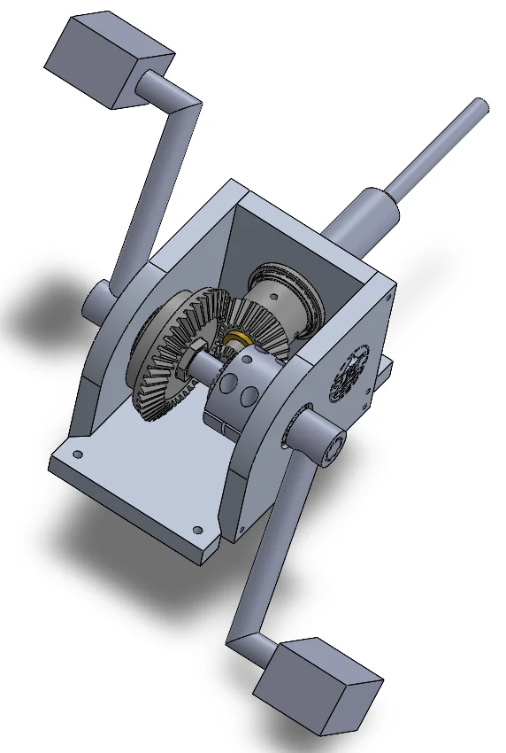

UBC SUBC - Drivetrain
Worked on underwater drivetrain design involving CAD modelling, stress analysis, manufacturing constraints, shafts, bearings, and subsystem integration.
UBC Engineering - Mechanical design, prototyping, mechatronics
I am a UBC engineering student focused on mechanical design, drivetrain systems, CAD, FEA, manufacturing, and the point where hardware starts becoming intelligent.

Bevel gearbox, shaft analysis, FEA, CNC housing, assembly constraints.
What this portfolio is about
This site organizes my projects around problem framing, engineering decisions, tools used, and results. The goal is to make each project scannable for recruiters, technical teams, and design team leads while still showing the details that matter.
Selected Projects
Experience
Worked on underwater drivetrain design involving CAD modelling, stress analysis, manufacturing constraints, shafts, bearings, and subsystem integration.
Shadowed engineers and assisted with circuit assembly, soldering, product testing, certification exposure, and hardware-focused problem solving.
Built a turbine, gearbox, DC motor, and circuit system that produced enough voltage to power an LED through water-driven rotation.
Engineering Approach
Start with the failure mode, constraint, or performance target before choosing a design direction.
Use CAD, free-body diagrams, calculations, and simulation to make decisions visible.
Design around manufacturing, tolerance, assembly order, access, and maintainability.
Turn technical work into concise design rationale that other people can build from.
Contact
This first version is ready for your LinkedIn, GitHub, email, resume, and more project media once you want to make it public.